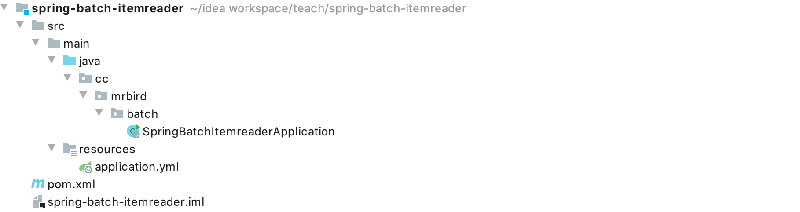
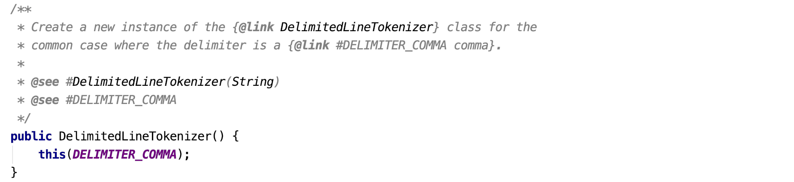
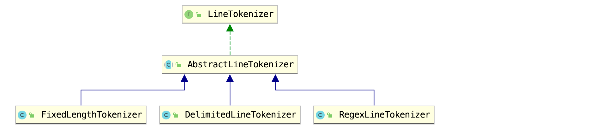
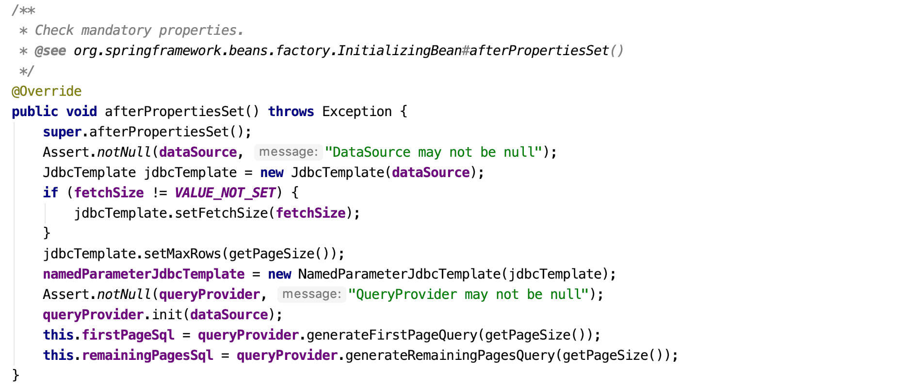

Spring Batch读取数据通过ItemReader接口的实现类来完成，包括FlatFileItemReader文本数据读取、StaxEventItemReader XML文件数据读取、JsonItemReader JSON文件数据读取、JdbcPagingItemReader数据库分页数据读取等实现，更多可用的实现可以参考：https://docs.spring.io/spring-batch/docs/4.2.x/reference/html/appendix.html#itemReadersAppendix，本文只介绍这四种比较常用的读取数据方式。
框架搭建
新建一个Spring Boot项目，版本为2.2.4.RELEASE，artifactId为spring-batch-itemreader，项目结构如下图所示：

剩下的数据库层的准备，项目配置，依赖引入和Spring Batch入门文章中的框架搭建步骤一致，这里就不再赘述。
简单数据读取
前面提到，Spring Batch读取数据是通过ItemReader接口的实现类来完成的，所以我们可以自定义一个ItemReader的实现类，实现简单数据的读取。
在cc.mrbird.batch包下新建reader包，然后在该包下新建ItemReader接口的实现类MySimpleIteamReader：
1 | public class MySimpleIteamReader implements ItemReader<String> { |
泛型指定读取数据的格式，这里读取的是String类型的List，read()方法的实现也很简单，就是遍历集合数据。
接着在cc.mrbird.batch包下新建job包，然后在该包下新建MySimpleItemReaderDemo类，用于测试我们定义的MySimpleIteamReader，MySimpleItemReaderDemo类代码如下：
1 |
|
上面代码中，我们通过mySimpleItemReader()方法创建了一个MySimpleIteamReader，并且传入了List数据。上面代码大体和上一节中介绍的差不多，最主要的区别就是Step的创建过程稍有不同。
在MySimpleItemReaderDemo类中，我们通过StepBuilderFactory创建步骤Step，不过不再是使用tasklet()方法创建，而是使用chunk()方法。chunk字面上的意思是“块”的意思，可以简单理解为数据块，泛型<String, String>用于指定读取的数据和输出的数据类型，构造器入参指定了数据块的大小，比如指定为2时表示每当读取2组数据后做一次数据输出处理。接着reader()方法指定读取数据的方式，该方法接收ItemReader的实现类，这里使用的是我们自定义的MySimpleIteamReader。writer()方法指定数据输出方式，因为这块不是本文的重点，所以先简单遍历输出即可。
启动项目，控制台日志打印如下：
1 | 2020-03-07 11:17:32.303 INFO 28381 --- [ main] o.s.b.c.l.support.SimpleJobLauncher : Job: [SimpleJob: [name=mySimpleItemReaderJob]] launched with the following parameters: [{}] |
文本数据读取
Spring Batch读取文本类型数据可以通过FlatFileItemReader实现，在演示怎么使用之前，我们先准备好数据文件。
在resources目录下新建file文件，内容如下：
1 | // 演示文件数据读取 |
file的数据是一行一行以逗号分隔的数据（在批处理业务中，文本类型的数据文件一般都是有一定规律的）。在文本数据读取的过程中，我们需要将读取的数据转换为POJO对象存储，所以我们需要创建一个与之对应的POJO对象。在cc.mrbird.batch包下新建entity包，然后在该包下新建TestData类：
1 | public class TestData { |
因为file文本中的一行数据经过逗号分隔后为1、11、12、13，所以我们创建的与之对应的POJO TestData包含4个属性id、field1、field2和field3。
接着在job包下新建FileItemReaderDemo：
1 |
|
上面代码中，我们在fileItemReader()方法里编写了具体的文本数据读取代码，过程参考注释即可。DelimitedLineTokenizer分隔符行处理器的默认构造器源码如下所示：

常量DELIMITER_COMMA的值为public static final String DELIMITER_COMMA = ",";，假如我们的数据并不是用逗号分隔，而是用|等字符分隔的话，可以使用它的有参构造器指定：
1 | DelimitedLineTokenizer tokenizer = new DelimitedLineTokenizer("|"); |
DelimitedLineTokenizer是AbstractLineTokenizer三个实现类之一：

顾名思义，FixedLengthTokenizer通过指定的固定长度来截取数据，RegexLineTokenizer通过正则表达式来匹配数据，这里就不演示了，有兴趣的可以自己玩玩。
编写好FileItemReaderDemo后，启动项目，控制台日志打印如下：
1 | 2020-03-07 12:06:11.876 INFO 29042 --- [ main] o.s.b.c.l.support.SimpleJobLauncher : Job: [SimpleJob: [name=fileItemReaderJob]] launched with the following parameters: [{}] |
数据库数据读取
在演示从数据库中读取数据之前，我们先准备好测试数据。在springbatch数据库中新建一张TEST表，SQL语句如下所示：
1 | -- ---------------------------- |
TEST表的字段和上面创建的TestData实体类一致。
然后在job包下新建DataSourceItemReaderDemo类，测试从数据库中读取数据：
1 |
|
dataSourceItemReader()方法中的主要步骤就是：通过JdbcPagingItemReader设置对应的数据源，然后设置数据量、获取数据的sql语句、排序规则和查询结果与POJO的映射规则等。方法末尾之所以需要调用JdbcPagingItemReader的afterPropertiesSet()方法是因为需要设置JDBC模板（afterPropertiesSet()方法源码）：

启动项目，控制台日志打印如下：
1 | 2020-03-07 16:01:05.366 INFO 30264 --- [ main] o.s.b.c.l.support.SimpleJobLauncher : Job: [SimpleJob: [name=dataSourceItemReaderJob]] launched with the following parameters: [{}] |
XML数据读取
Spring Batch借助Spring OXM可以轻松地实现xml格式数据文件读取。在resources目录下新建file.xml，内容如下所示：
1 |
|
xml文件内容由一组一组的<test></test>标签组成，<test>标签又包含四组子标签，标签名称和TestData实体类属性一一对应。
准备好xml文件后，我们在pom中引入spring-oxm依赖：
1 | <dependency> |
接着在job包下新建XmlFileItemReaderDemo，演示xml文件数据获取：
1 |
|
在xmlFileItemReader()方法中，我们通过StaxEventItemReader读取xml文件，代码较简单，看注释即可。
启动项目，控制台日志打印如下：
1 | 020-03-07 16:23:47.775 INFO 30450 --- [ main] o.s.b.c.l.support.SimpleJobLauncher : Job: [SimpleJob: [name=xmlFileItemReaderJob]] launched with the following parameters: [{}] |
JSON数据读取
在resources目录下新建file.json文件，内容如下：
1 | [ |
JSON对象属性和TestData对象属性一一对应。在job包下新建JSONFileItemReaderDemo，用于测试JSON文件数据读取：
1 |
|
启动项目，控制台输出如下：
1 | 2020-03-07 16:40:52.508 INFO 30599 --- [ main] o.s.b.c.l.support.SimpleJobLauncher : Job: [SimpleJob: [name=jsonFileItemReaderJob]] launched with the following parameters: [{}] |
多文本数据读取
多文本的数据读取本质还是单文件数据读取，区别就是多文件读取需要在单文件读取的方式上设置一层代理。
在resources目录下新建两个文件file1和file2，file1内容如下所示：
1 | // 演示文件数据读取 |
file2内容如下所示：
1 | // 演示文件数据读取 |
然后在job包下新建MultiFileIteamReaderDemo，演示多文件数据读取：
1 |
|
上面代码中fileItemReader()方法在文本数据读取中介绍过了，多文件读取的关键在于multiFileItemReader()方法，该方法通过MultiResourceItemReader对象设置了多个文件的目标地址，并且将单文件的读取方式设置为代理。
启动项目，控制台日志打印如下：
1 | 2020-03-07 16:55:24.480 INFO 30749 --- [ main] o.s.b.c.l.support.SimpleJobLauncher : Job: [SimpleJob: [name=multiFileItemReaderJob]] launched with the following parameters: [{}] |
本节源码链接：https://github.com/wuyouzhuguli/SpringAll/tree/master/68.spring-batch-itemreader。